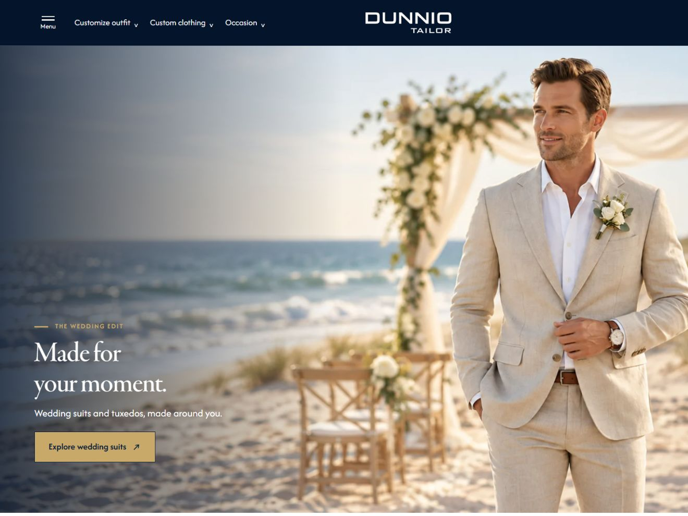

V3.2 / WEDDING STORYBẢN BÀN GIAO DEVELOPER
Wedding Story v3.2
Final · Đóng băng
Bản final đã được duyệt, giữ nguyên HTML và toàn bộ tài nguyên runtime. PC 7:4, tự chuyển banner mỗi 6 giây; kéo chuột hoặc vuốt ngang để đổi ảnh. Ảnh minh họa là hồ sơ Yêu cầu 25.